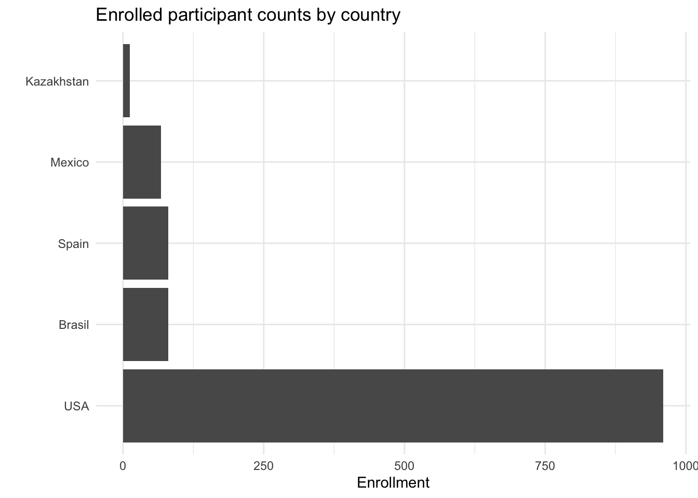
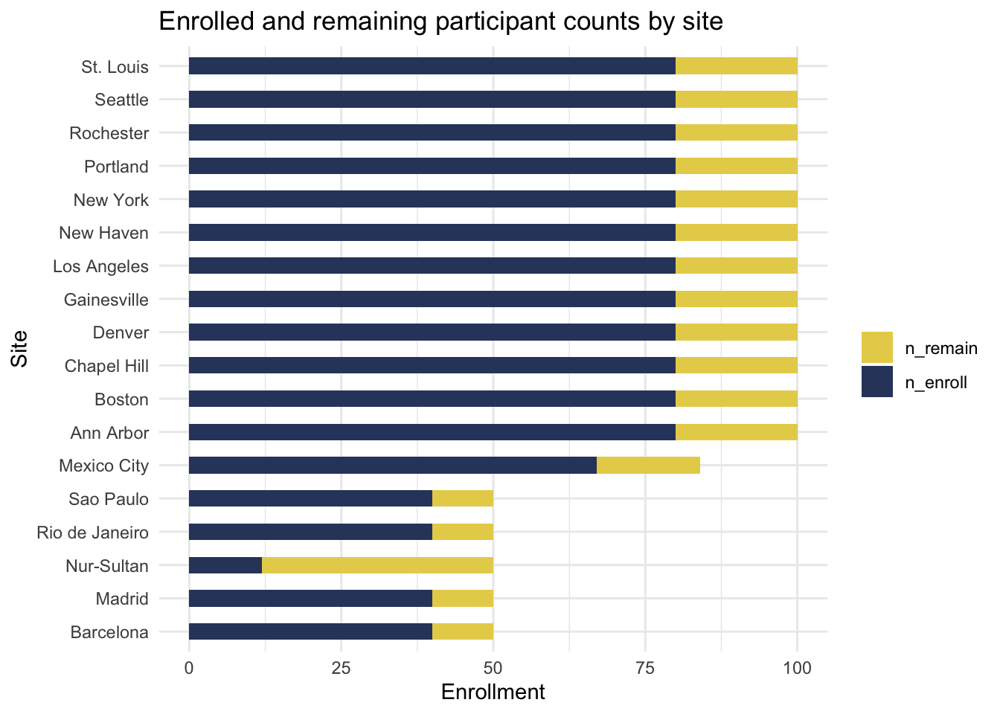
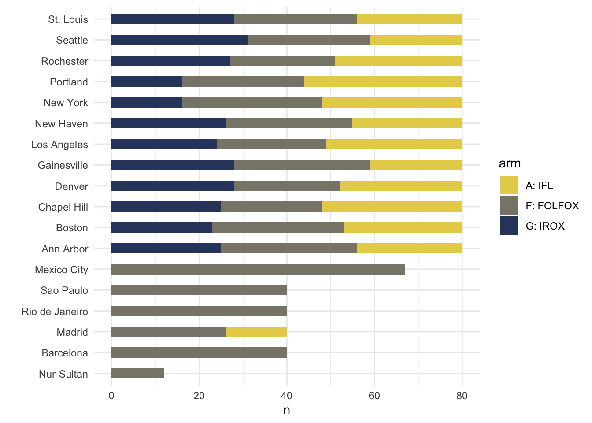

Response and adverse events to chemotherapy: A mock study
A Y1 progress report presented to NRF funding agency
2019-09-12
Summary
We have collected data on 1199 participants from all 18 planned sites. We have 5 countries represented.

Our target enrollment is 1534 participants total, so we are currently at 79% enrollment. Our latest enrollment counts by site are presented below. Targeted enrollment is approximately 100 participants per US site, with lower targets set for non-US sites.

| Overall (N=1199) | |
|---|---|
| site | |
| Ann Arbor | 80 (6.7%) |
| Barcelona | 40 (3.3%) |
| Boston | 80 (6.7%) |
| Chapel Hill | 80 (6.7%) |
| Denver | 80 (6.7%) |
| Gainesville | 80 (6.7%) |
| Los Angeles | 80 (6.7%) |
| Madrid | 40 (3.3%) |
| Mexico City | 67 (5.6%) |
| New Haven | 80 (6.7%) |
| New York | 80 (6.7%) |
| Nur-Sultan | 12 (1.0%) |
| Portland | 80 (6.7%) |
| Rio de Janeiro | 40 (3.3%) |
| Rochester | 80 (6.7%) |
| Sao Paulo | 40 (3.3%) |
| Seattle | 80 (6.7%) |
| St. Louis | 80 (6.7%) |
Treatment arms
The three treatment arms compared in this study are:
Almost half of our enrolled participants have been assigned to the FOLFOX arm.
arm n percent
A: IFL 344 28.7%
F: FOLFOX 558 46.5%
G: IROX 297 24.8%
Total 1199 100.0%Treatment arms by site
Several sites have not recruited participants from one or more of the 3 treatment arms. These sites will need to be monitored for inclusion in the final analyses.
| site | n_arms |
|---|---|
| Barcelona | 1 |
| Mexico City | 1 |
| Nur-Sultan | 1 |
| Rio de Janeiro | 1 |
| Sao Paulo | 1 |
| Madrid | 2 |
In fact, most of our non-US sites have enrolled participants exclusively in the FOLFOX treatment arm. We will monitor the proportions of participants per arm for US versus non-US sites to ensure the validity of results and minimize possible confounding site-level factors.

Demographics
| A: IFL (N=344) | F: FOLFOX (N=558) | G: IROX (N=297) | Total (N=1199) | p value | |
|---|---|---|---|---|---|
| sex | 0.081 | ||||
| Female | 118 (34.3%) | 228 (40.9%) | 125 (42.1%) | 471 (39.3%) | |
| Male | 226 (65.7%) | 330 (59.1%) | 172 (57.9%) | 728 (60.7%) |
- Pearson’s Chi-squared test
| A: IFL | F: FOLFOX | G: IROX | p | test | |
|---|---|---|---|---|---|
| n | 344 | 558 | 297 | ||
| age (mean (SD)) | 59.52 (11.28) | 60.32 (11.72) | 59.65 (11.53) | 0.535 | |
| race (%) | 0.806 | ||||
| African-Am | 27 ( 7.8) | 40 ( 7.2) | 23 ( 7.7) | ||
| Asian | 1 ( 0.3) | 9 ( 1.6) | 3 ( 1.0) | ||
| Caucasian | 300 (87.2) | 472 (84.6) | 256 (86.2) | ||
| Hawaii/Pacific | 1 ( 0.3) | 3 ( 0.5) | 1 ( 0.3) | ||
| Hispanic | 11 ( 3.2) | 26 ( 4.7) | 11 ( 3.7) | ||
| Native-Am/Alaska | 2 ( 0.6) | 1 ( 0.2) | 1 ( 0.3) | ||
| Other | 2 ( 0.6) | 7 ( 1.3) | 2 ( 0.7) |
Adverse events
Adverse events have been low overall, affecting at most approximately 22.8% of patients (diarrhea in the FOLFOX arm).
For final reporting, we will follow recent BMJ recommendations that “adverse event reporting should include numerators and denominators for all events.”
Acknowledgments
Our thanks to all the research participants and their families.